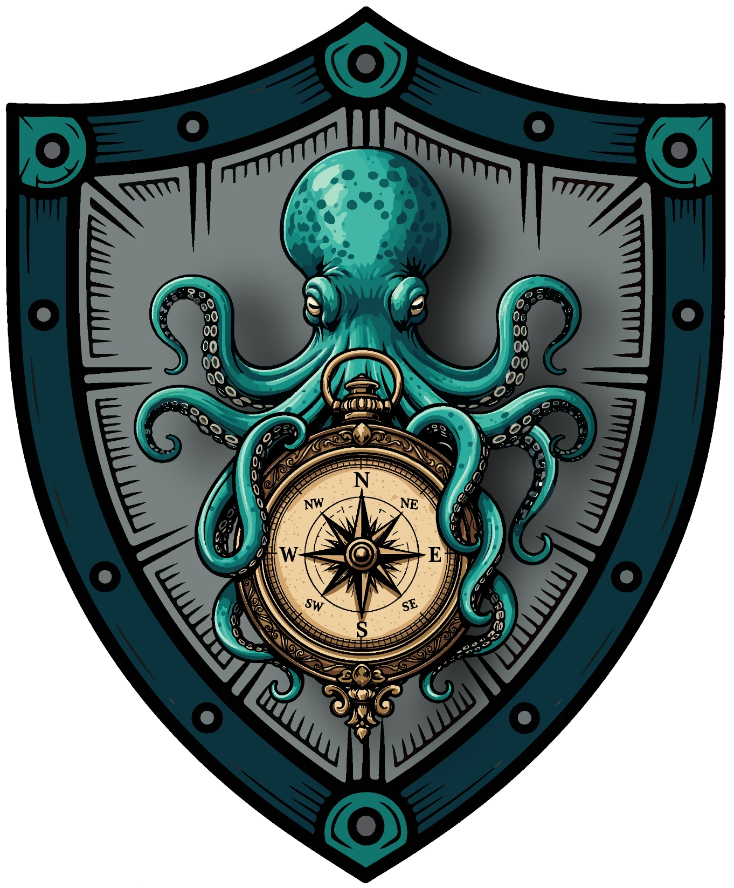

New Book By Timothy R Martin Foreword by Sammy Davis, Medal of Honor Recipient
Finding Strength and Steadiness in the Lessons Life Leaves Behind
A collection of deeply personal stories and simple symbols that offer reminders of strength, connection, direction, and hope for anyone carrying more than others can see.
Some symbols decorate a life. Others hold it together.

The Symbols We Carry is a deeply personal exploration of resilience, connection, and the unexpected reminders that help us keep moving forward when life becomes difficult.
Through stories of trauma, loss, friendship, service, and healing, Timothy Martin shares the meaning behind ordinary objects that became something more: a compass, a mirror, a well-worn Gumby, fishing line, a river, and other symbols that helped provide direction, perspective, patience, hope, and strength when he needed them most.
Each chapter pairs a symbol with a hard-won lesson, not as an answer to what someone is carrying, but as an invitation to recognize the anchors already present in their own life.
Written for anyone quietly carrying weight others may never see, The Symbols We Carry is a reminder that resilience is rarely a solo act. We are strengthened by the people who show up, the lessons we carry forward, and the small things that remind us who we are when the storm makes that difficult to remember.
This is not a book about having everything figured out.
It is about finding something to hold onto.
You are stronger than you realize. Your story is still being written.
*All proceeds from the book support Symbolisms for Resilience, a 501(c)(3) nonprofit dedicated to reminding people that they are not alone.
Advance praise
What early readers say
“Through honest reflection and meaningful human storytelling, Tim Martin reminds readers that the storms we survive can become part of the strength we carry. Hardship is the greatest teacher of suffering. Suffering is a necessity of discipline. Discipline forges the greatest leaders.”
Ramón “CZ” Colón-López (Ret.)
4th Senior Enlisted Advisor to the Chairman of the Joint Chiefs of Staff (SEAC)
“The Symbols We Carry captures something I have seen repeatedly in resilience and prevention work: healing rarely happens through information alone. It happens through meaning, connection, and the reminder that we do not have to carry difficult things by ourselves.”
Yael Schwarz Freimann
Resilience, Prevention & Community Impact Strategist
“Tim Martin has written a remarkable book that transforms everyday symbols into powerful lessons about resilience, faith, service, and personal growth. The Symbols We Carry reminds us that our greatest struggles often become the very things that shape our strength. This is a thoughtful, inspiring read that will encourage readers to reflect, heal, and move forward with purpose.”
Dr. JayR McIntyre
U.S. Army Bronze Star Recipient, Motivational Speaker, Veteran Advocate
Timothy Martin is a proud father, leader, advocate, and the founder of Symbolisms for Resilience, a 501(c)(3) nonprofit dedicated to helping veterans, first responders, survivors, and anyone facing life's hardships find strength through connection, symbolism, and community.
The son of a United States Marine, Tim grew up all over the world as a military brat. For more than two decades he has built a career as an executive in government services, but the mission closest to his heart began with a single object: the Coin of Resilience, a tangible reminder to keep fighting, reach out, and never lose hope.